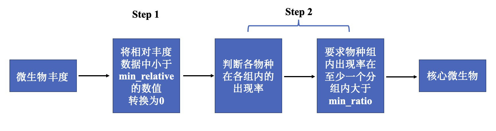
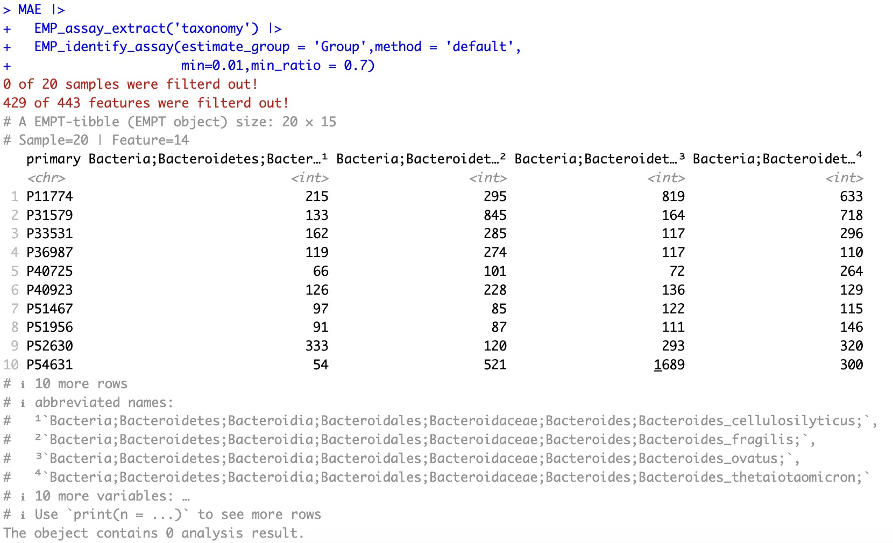
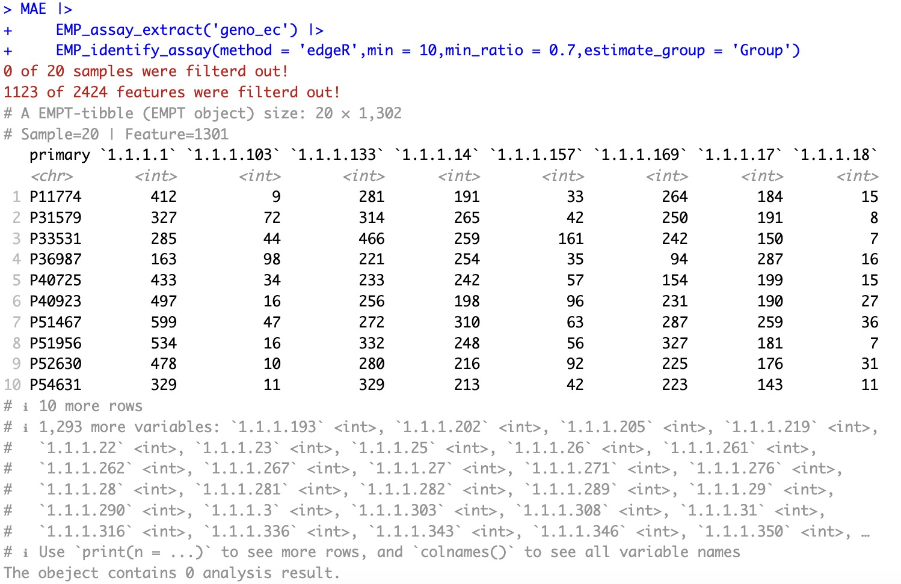

5.6 确定核心数据 EMP_identify_assay
传统组学数据中，存在着大量稀疏的特征，比如微生物OTU/ASV注释表有着大量丰度极低菌种。这些稀疏特征有可能是样本污染、建库错误、测序偏倚或者注释失败等原因导致。为了简化计算或者减小这些数据干扰，本模块提供了两种方法进行过滤原始数据。
5.6.1 核心微生物数据
在微生物注释分析的结果中，可以发现存在相当多的”稀有物种“（相对丰度较低或者在样本中出现的频率较低），对于识别组间具有差异性的物种造成极强的干扰，尤其是在筛选关键物种时，机器学习算法(例如：随机森林、LEFse），很容易将这些“稀有物种”识别为组间的“差异物种”，因此，有必要在正式分析前将这些“稀有物种”根据统一的标准进行过滤。EMP_identify_assay模块引入了两个重要参数帮助过滤：minnum（即“最小相对丰度”）和minratio（即“最小占比”）。首先，在微生物数据中，低于指定“最小相对丰度”的任何丰度都会转换为 0。随后，当某个物种在任意一组样本中高于”最小相对丰度“的样本数量占该分组下样本总数量的比例大于”最小占比“时，该物种就被认为是”核心物种“，而其余物种都被归类为“稀有物种”并被过滤掉。

使用函数EMP_assay_extract提取实验数据taxonomy。使用函数EMP_identify_assay过滤获取“核心物种”，参数estimate_group指定将Group作为分组信息，参数min指定“最小相对丰度”为0.01，参数min_ratio指定“最小占比”为0.7。注意：当输入的微生物数据为”绝对丰度“时，在计算过程中，EMP_identify_assay模块会自动将其转换为相对丰度，以便在计算过程中进行过滤和获取“核心物种”，再根据过滤条件重新输出对应的绝对丰度的数据。
MAE |>
EMP_assay_extract('taxonomy') |>
EMP_identify_assay(estimate_group = 'Group',method = 'default',
min=0.01,min_ratio = 0.7)

5.6.2 核心基因组数据
在基因组数据中，edgeR包提供了一种基于最小丰度值计算的过滤方法。EMP_assay_extract可以方便调用该方法对于基因组/转录组等数据进行规律。
MAE |>
EMP_assay_extract('geno_ec') |>
EMP_identify_assay(method = 'edgeR',min = 10,min_ratio = 0.7,estimate_group = 'Group')
